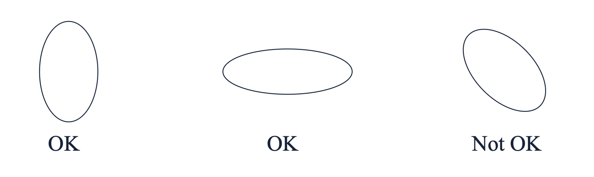
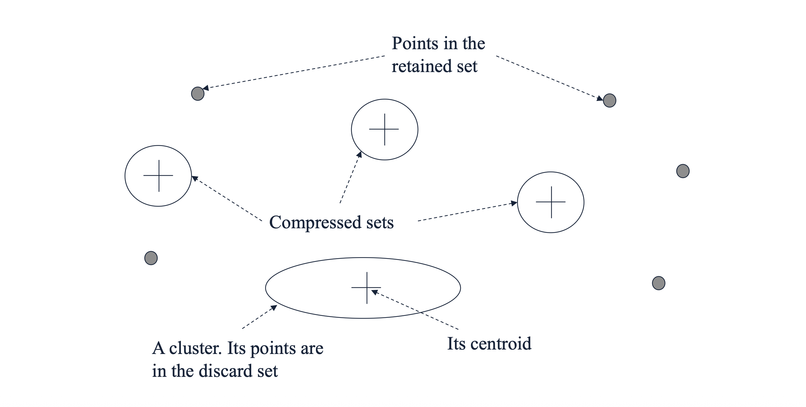
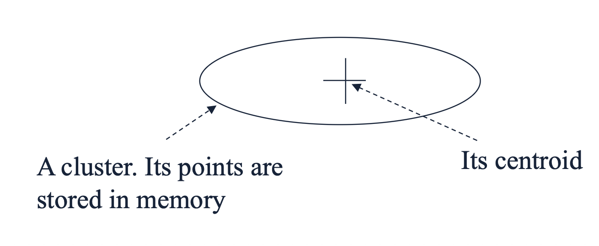

1. Introduction: BFR 알고리즘의 등장 배경
지난 포스트에서는 대규모 데이터를 군집화하기 위해 대표점(Representative points)을 활용하는 CURE 알고리즘을 살펴보았습니다. 이번에는 또 다른 접근법인 BFR (Bradley, Fayyad, and Reina) 알고리즘에 대해 알아봅니다.
BFR 알고리즘은 널리 쓰이는 K-Means 군집화 기법을 디스크 기반(Disk-resident)의 대규모 데이터 셋에 적용할 수 있도록 변형(Variant)한 알고리즘입니다. K-Means의 직관성을 유지하면서도, 데이터를 메모리에 전부 올리지 않고 효율적으로 중심점(Centroids)을 찾는 것을 첫 번째 패스(Pass 1)의 주된 목표로 삼습니다. 이후 전체 데이터를 관통하는 두 번째 패스(Pass 2)를 통해 최종적인 포인트 할당을 수행합니다.
2. Key Assumptions: 데이터 형태에 대한 가정
- BFR 알고리즘이 효율적으로 동작하기 위해서는 데이터 분포에 대한 명확한 수학적 가정이 필요합니다.
- 정규 분포 및 유클리드 공간: 군집들이 유클리드 공간 내에서 정규 분포(Normally-distributed)를 따른다고 가정합니다.
- 축에 정렬된 타원형(Axis-aligned ellipses): 각 군집의 형태는 축에 나란히 정렬된 타원 모양이어야 합니다.
- 차원별 독립적 분산: 각 차원(Dimension)에서의 표준편차(Standard deviations)는 서로 다를 수 있습니다. 이는 축에 정렬되어 있다는 가정과 결합하여, 차원 간의 공분산(Covariance)을 무시할 수 있게 해줍니다.

3. Main Idea: 요약 통계량 (Summary Statistics) 유지
BFR 알고리즘의 핵심 동기(Motivation)는 “모든 데이터를 메모리에 들고 있을 필요가 없다”는 것입니다. 그 대신 점들의 그룹을 대표하는 요약 통계량(Summary statistics)만을 메모리에 유지합니다.
디스크로부터 데이터를 메인 메모리가 꽉 찰 만큼씩(one main-memory-full at a time) 읽어 들입니다.
이전 메모리 로드 단계에서 처리한 대부분의 점들을 요약하여 압축합니다.
이 과정을 통해 필요한 메모리 요구량이 전체 데이터 크기 \(O(data)\)에서 군집의 개수에 비례하는 크기 \(O(clusters)\) 수준으로 획기적으로 줄어듭니다.
하지만 모든 점이 완벽하게 요약되는 것은 아닙니다. 어떤 점들은 기존 군집에 속하지 못하고 떠돌 수 있습니다. 이를 효과적으로 관리하기 위해 BFR은 메모리 상의 데이터를 세 가지 클래스로 분류합니다.
4. Three Classes of Points: 세 가지 데이터 집합
- 알고리즘이 진행되는 동안 메모리로 들어온 모든 데이터 포인트는 다음 세 가지 집합 중 하나로 분류됩니다.
- Discard set (버림 집합 = 기존 군집): 특정 군집의 중심점(Centroid)에 충분히 가까운 점들입니다. 이들은 군집의 요약 통계량에 반영된 후 메모리에서 즉시 버려집니다(Discarded).
- Compressed set (압축 집합 = 미니 군집): 서로 가깝게 모여 있지만(close together), 아직 어떤 기존 군집의 중심과도 가깝지 않은 점들입니다. 이들끼리 묶어 ’미니 군집’을 형성하고 통계량만 요약한 뒤 개별 점은 버리지만, 정식 군집으로 할당하지는 않습니다.
- Retained set (보류 집합): 주변에 다른 점이 없어 압축 집합(미니 군집)으로 묶이지도 못하고, 기존 중심과도 먼 고립된(Isolated) 점들입니다. 이들은 향후 다른 점이 들어와 묶일 수 있도록 메모리에 원본 그대로 유지(Waiting)됩니다.

5. Mathematical Formulation: 2d + 1 요약 통계량
- Discard set이나 Compressed set은 개별 데이터 포인트를 지우는 대신, 오직 \(2d + 1\) 개의 값(여기서 \(d\)는 차원의 수)만으로 해당 그룹을 요약합니다. 점들의 집합을 \(C\)라고 할 때, 유지하는 값은 다음과 같습니다.
- \(N\): 해당 집합에 속한 점의 총 개수입니다. (1개의 스칼라 값)
- \(SUM\): 각 차원별 좌표의 합을 담은 길이가 \(d\)인 벡터입니다. \[SUM_{i} = \sum_{k \in C} x_{ki}\]
- \(SUMSQ\): 각 차원별 좌표의 제곱합을 담은 길이가 \(d\)인 벡터입니다. \[SUMSQ_{i} = \sum_{k \in C} x_{ki}^2\]
5.1 통계량을 통한 중심과 분산 도출
- 이 \(2d+1\) 개의 요약 정보만 있으면, 원본 데이터가 없어도 군집의 중심(Centroid)과 크기(Variance)를 언제든 계산할 수 있습니다.
- 차원 \(i\)의 평균 (군집의 중심): \(SUM_{i} / N\)
- 차원 \(i\)의 분산 (군집의 크기): 통계학의 기본 성질인 \(Var(X) = E[X^2] - E[X]^2\) 공식을 이용합니다. \[Var_{i} = \frac{SUMSQ_{i}}{N} - \left( \frac{SUM_{i}}{N} \right)^2\]
- 차원 \(i\)의 표준편차: 계산된 분산의 제곱근(Square root)을 취합니다.
- 앞서 2장에서 언급한 “축에 정렬된 타원형 군집” 가정이 바로 여기서 결정적인 역할을 합니다. 이 가정이 성립하기 때문에 각 차원의 분산을 개별적으로 계산할 수 있습니다. 만약 이 가정이 없다면, 차원 간의 상관관계를 나타내는 \(d \times d\) 크기의 방대한 공분산 행렬(Covariance matrix)을 통째로 저장하고 계산해야 하므로 메모리 효율성이 크게 떨어집니다.
6. Benefits: 연산의 효율성
- 이러한 \(2d + 1\) 통계량 표현 방식은 군집화 과정에서의 연산을 매우 단순하게 만들어 줍니다.
- 새로운 점 추가 (Benefit 1): 어떤 점을 군집에 새로 추가할 때, \(N\)을 1 증가시키고, 해당 점의 좌표를 \(SUM\) 벡터에 더하며, 좌표의 제곱값을 \(SUMSQ\) 벡터에 더하기만 하면 됩니다. 전체 평균을 다시 계산하기 위해 과거의 점들을 다시 볼 필요가 없습니다.
- 두 군집의 병합 (Benefit 2): 두 개의 요약된 군집(예: 두 개의 미니 군집)을 하나로 합칠 때도, 단순히 두 군집의 \(N\), \(SUM\), \(SUMSQ\) 값들을 각각 더해주기만 하면 완벽히 병합됩니다.
7. Pop Quiz: 손으로 직접 계산해보기

주어진 점들의 집합: \((5, 1), (6, 2), (7, 0)\)
- \(N\): 총 3개의 점이므로 \(N = 3\)
- \(SUM\): 각 차원별 합
- \(SUM_{1} = 5 + 6 + 7 = 18\)
- \(SUM_{2} = 1 + 2 + 0 = 3\)
- \(\therefore SUM = (18, 3)\)
- \(SUMSQ\): 각 차원별 제곱합
- \(SUMSQ_{1} = 5^2 + 6^2 + 7^2 = 25 + 36 + 49 = 110\)
- \(SUMSQ_{2} = 1^2 + 2^2 + 0^2 = 1 + 4 + 0 = 5\)
- \(\therefore SUMSQ = (110, 5)\)
- 첫 번째 차원(dimension 1)의 분산(Variance): \[Var_1 = \frac{110}{3} - \left(\frac{18}{3}\right)^2 = 36.66... - 6^2 = 36.66... - 36 = 0.666...\] (즉, \(\frac{2}{3}\))